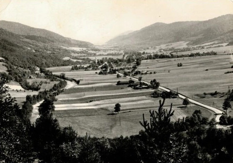
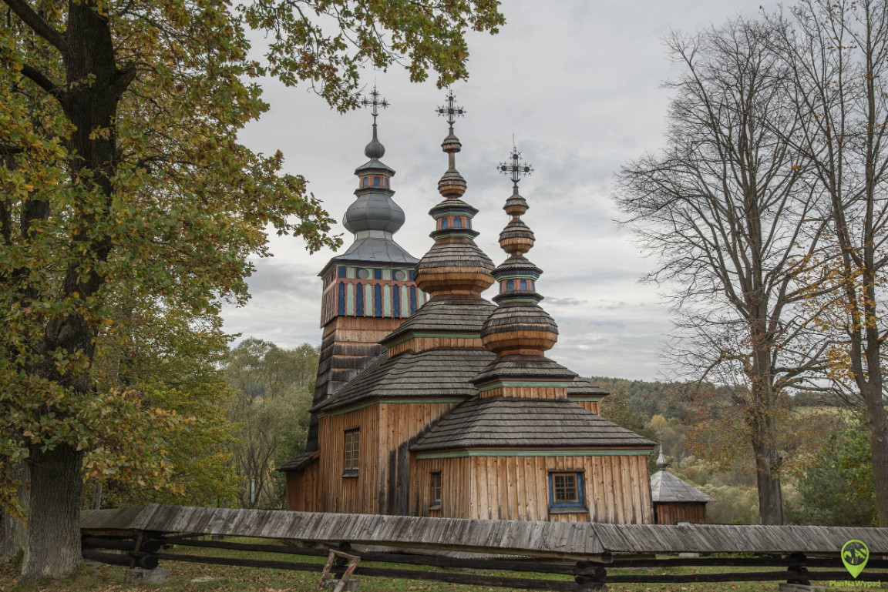

Historia parku
Historia Magurskiego Parku Narodowego sięga drugiej połowy XX wieku. Pomysł utworzenia parku pojawił się już w latach 70. XX wieku, gdy naukowcy i przyrodnicy zaczęli zwracać uwagę na wyjątkową przyrodę Beskidu Niskiego oraz potrzebę jej ochrony.

Po wielu latach przygotowań i planów rząd Polski podjął decyzję o utworzeniu parku. Magurski Park Narodowy oficjalnie rozpoczął działalność 1 stycznia 1995 roku, na mocy rozporządzenia Rady Ministrów z 24 listopada 1994 roku. Park został utworzony, aby chronić unikalne krajobrazy Beskidu Niskiego, rozległe lasy bukowe oraz bogatą faunę i florę tego regionu. Obecnie jego powierzchnia wynosi około 194 km², a większość obszaru stanowią naturalne lasy. Historia tych terenów jest jednak znacznie starsza. Przed II wojną światową w okolicznych dolinach znajdowały się liczne wsie zamieszkiwane głównie przez Łemków. Po wojnie wiele z nich zostało opuszczonych lub zniszczonych, a przyroda stopniowo odzyskała te tereny. Dzięki temu dziś można tu spotkać rozległe, dzikie lasy i pozostałości dawnych osad, takie jak stare cerkwie czy cmentarze. Siedziba dyrekcji parku początkowo znajdowała się w Nowy Żmigród, jednak w 1997 roku została przeniesiona do miejscowości Krempna, gdzie znajduje się do dziś. Obecnie park pełni ważną rolę w ochronie przyrody Karpat oraz edukacji turystów odwiedzających ten region.
